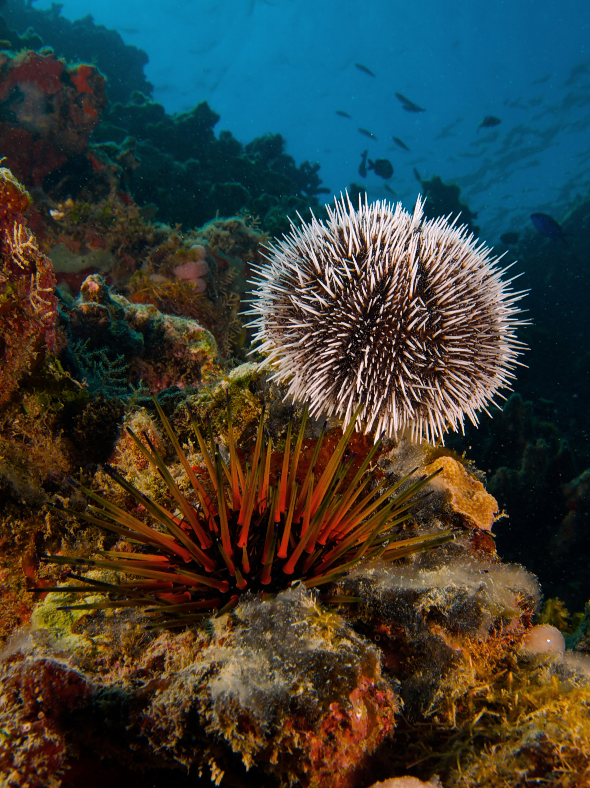
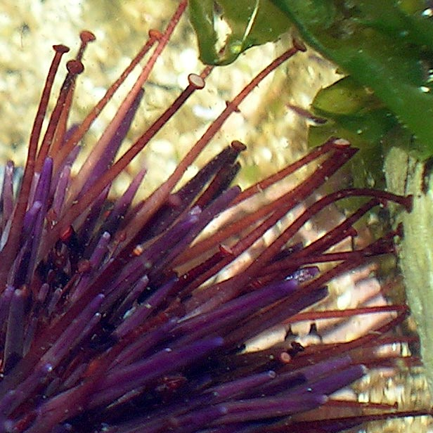

<!DOCTYPE html>
<html lang="en">

</html>

<head>
  <meta charset="UTF-8">
  <meta name="viewport" content="width=device-width, initial-scale=1.0">
  <link rel="stylesheet" href="style.css">
  <!-- Montserrat Alternates font -->
  <link rel="preconnect" href="https://fonts.googleapis.com">
  <link rel="preconnect" href="https://fonts.gstatic.com" crossorigin>
  <link
    href="https://fonts.googleapis.com/css2?family=Montserrat+Alternates:ital,wght@0,100;0,200;0,300;0,400;0,500;0,600;0,700;0,800;0,900;1,100;1,200;1,300;1,400;1,500;1,600;1,700;1,800;1,900&display=swap"
    rel="stylesheet">
  <!-- Montserrat font -->
  <link rel="preconnect" href="https://fonts.googleapis.com">
  <link rel="preconnect" href="https://fonts.gstatic.com" crossorigin>
  <link href="https://fonts.googleapis.com/css2?family=Montserrat:ital,wght@0,100..900;1,100..900&display=swap"
    rel="stylesheet">
  <title>Group 3 Exercise</title>
</head>

<body>
  <nav>
    <a href="../index.html" class="right-border">Home</a>
    <a href="../group1/group1.html" class="right-border">Group 1</a>
    <a href="../group2/group2.html">Group 2</a>
  </nav>


  <header>
    <h3>Sea Urchins</h3>
  </header>

  <main>
    <h2>
      What is a sea urchin?
    </h2>
    <div class="pair">
      
      <h1>
        Sea urchins or urchins are typically spiny, globular animals, echinoderms in the class Echinoidea. About 950
        species live on the seabed, inhabiting all oceans and depth zones from the intertidal to 5,000 metres (16,000
        ft).
        Their tests (hard shells) are round and spiny, typically from 3 to 10 cm (1 to 4 in) across.
        Sea urchins move slowly, crawling with their tube feet, and sometimes pushing themselves with their spines. They
        feed primarily on algae but also eat slow-moving or sessile animals. Their predators include sharks, sea otters,
        starfish, wolf eels, and triggerfish. <a
          href="https://en.wikipedia.org/wiki/Sea_urchin#Trophic_level:~:text=A%20sea%20otter%20feeding%20on%20a%20purple%20sea%20urchin."
          target="_blank">Click here.</a>
      </h1>
    </div>

    <h1>Can sea urchins move?</h1>
    <div class="pair">
      <h3>Sea urchins move by walking, using their many flexible tube feet in a way similar to that of starfish; regular
        sea urchins do not have any favourite walking direction. The tube feet protrude through pairs of pores in the
        test, and are operated by a water vascular system; this works through hydraulic pressure, allowing the sea
        urchin
        to pump water into and out of the tube feet. During locomotion, the tube feet are assisted by the spines which
        can
        be used for pushing the body along or to lift the test off the substrate. Movement is generally related to
        feeding, with the red sea urchin (Mesocentrotus franciscanus) managing about 7.5 cm (3 in) a day when there is
        ample food, and up to 50 cm (20 in) a day where there is not. An inverted sea urchin can right itself by
        progressively attaching and detaching its tube feet and manipulating its spines to roll its body upright. Some
        species bury themselves in soft sediment using their spines, and Paracentrotus lividus uses its jaws to burrow
        into soft rocks. <a
          href="https://en.wikipedia.org/wiki/Sea_urchin#/media/File:Seeigel-Saugfuesse(Galicien2005).jpg"
          target="_blank">Click here.</a></h3>
      
    </div>

    <h2>Want to learn more about sea urchins?</h2>
    <p><a href="https://en.wikipedia.org/wiki/Sea_urchin" target="_blank">Click here.</a></p>
  </main>
</body>